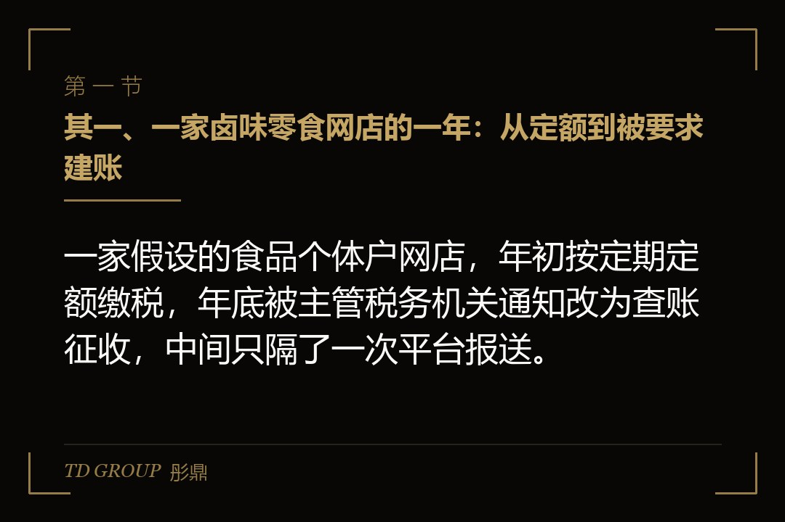
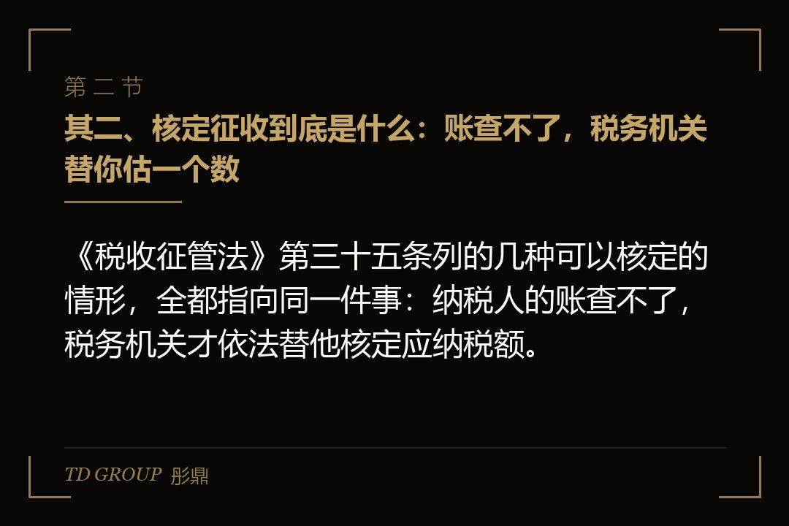
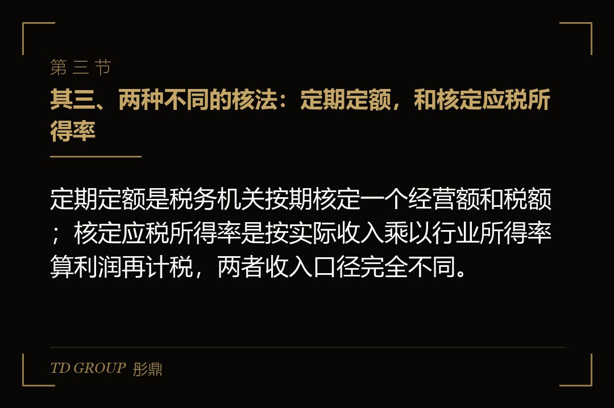

其一、一家卤味零食网店的一年：从定额到被要求建账

结论先行：一家假设的食品个体户网店，年初按定期定额缴税，年底被主管税务机关通知改为查账征收，中间只隔了一次平台报送。
假设有位做卤味零食的店主，姑且叫他老周。2025 年初，他在老家注册了一家个体工商户，在两个电商平台上开店，主管税务机关给他核了定期定额：每个季度按核定的经营额缴税，账不用建，申报表也简单，他一直觉得这就是「小店该有的待遇」。
上半年生意平平，季度销售额在核定的经营额附近晃。到了七八月，一款新品在短视频里带火了，三季度的销售额一下子冲到核定经营额的好几倍。老周没当回事，照旧按定额申报，多出来的那部分，他以为「定额就是定额，多卖了也是这个数」。
2025 年 10 月，平台头一次向税务机关报送了平台内经营者的身份信息和三季度收入。平台报的那个数，跟老周自己按定额申报的数，从这个月起被放在了同一张桌子上。这件事本身怎么运作，本专题另有一篇专门讲，不在本文展开。
2026 年初，主管税务机关约谈老周：三季度、四季度的实际收入远超核定经营额，超出部分没有按规定申报；同时他的规模已经不属于「达不到建账标准」的小户，从新的纳税期起改为查账征收，要求建账，并对超定额的部分补申报、补税。老周这才发现，他从来没搞懂「核定」两个字是什么意思。
其二、核定征收到底是什么：账查不了，税务机关替你估一个数

结论先行：《税收征管法》第三十五条列的几种可以核定的情形，全都指向同一件事：纳税人的账查不了，税务机关才依法替他核定应纳税额。
先把这个词翻译成大白话。正常的纳税方式叫查账征收：你自己记账，收入减成本减费用算出利润，按利润报税，税务机关有权来查你的账。核定征收是这条路走不通时的替代办法：你的账没有、或者不可信，税务机关就依据行业、规模、地段这些信息，替你估一个应纳税额。
《税收征管法》第三十五条把可以核定的情形列得很清楚：依法可以不设置账簿的；依法应当设置但没有设置账簿的；擅自销毁账簿或者拒不提供纳税资料的；虽然设了账但账目混乱、成本资料和收入凭证残缺不全难以查账的；发生纳税义务却不按期申报、责令限期申报后仍不申报的；申报的计税依据明显偏低又没有正当理由的。
把这六种情形放在一起看，没有一条写着「为了减轻负担」。它们的共同点是：税务机关拿不到一本可以核对的账。核定是税务机关在这种情况下行使的一项权力，目的是把该收的税收上来，而不是给纳税人一条更省钱的路。
老周属于头一种：生产经营规模小、达不到建账标准，依法可以不设账，所以主管税务机关按《个体工商户税收定期定额征收管理办法》给他核了定额。这个前提一旦不成立，比如规模已经足够大、平台上每一笔收入都查得到，核定的理由也就跟着消失了。
其三、两种不同的核法：定期定额，和核定应税所得率

结论先行：定期定额是税务机关按期核定一个经营额和税额；核定应税所得率是按实际收入乘以行业所得率算利润再计税，两者收入口径完全不同。
很多店主嘴里的「核定」，其实混着两种不同的东西。头一种是定期定额，依据是国家税务总局令第 16 号那份办法，适用对象是经主管税务机关认定、生产经营规模小、达不到建账标准的个体工商户。税务机关核定一个期间的经营额和应纳税额，纳税人按期缴纳，实际经营额超过定额一定幅度的，要自行申报。
打个比方，定期定额像是包月的水费：水务公司估你一个月大概用多少水，你按这个数交。但包月不等于随便用，用量超过一定幅度，得按实际用量补。老周栽的地方就在这里：他以为定额是「上限锁死」，其实定额是「估计值」，超了就要报。
第二种是核定应税所得率，多用于成本查不清、但收入能查清的经营者。税务机关不估你的收入，收入按实际发生额算，只核定一个行业所得率，用收入乘以所得率得出应纳税所得额，再按适用税率计税。它解决的是「成本算不清」，不是「收入算不清」。
两者的差别，对电商店主意味着两件事。用定期定额的，收入一旦被平台报送证实远超定额，定额本身就站不住；用核定应税所得率的，收入每一笔都要如实进账，所得率只是替你估成本。无论哪种，都不存在「多卖了也按老数交」这回事。具体适用哪种、所得率多少，各地口径不一，以主管税务机关认定为准。
其四、核定是税务机关的权力，不是纳税人可以选的选项
结论先行：纳税人可以提出申请，但核不核、按什么核、核多少，都由主管税务机关认定；符合条件的可以被核定，不符合条件的说破天也核不了。
老周被约谈时问了一句：我能不能继续申请核定？主管税务机关的回答很直接：你现在的规模已经建得起账，平台上的收入也查得到，不满足核定的前提。这句话点出了很多店主没想过的事：核定不是一个可以勾选的选项。
《税收征管法》第三十五条的原文是税务机关「有权核定其应纳税额」。主语是税务机关，动词是「有权」。纳税人能做的，是在符合条件时提出申请、提供资料，最后由主管税务机关认定。反过来，纳税人明明能建账却不建账，税务机关也可以直接核定，那时的核定往往不是好事，而是带着追缴和处罚一起来的。
再举一个已经关上的门。财政部、税务总局 2021 年第 41 号公告规定，持有股权、股票等权益性投资的个人独资企业、合伙企业，一律适用查账征收。当年不少人拿个独去核定，公告一出，这条路就收了。至于电商到底该用个体户、个独还是公司，本专题另有一篇专门讲，不在本文展开。
假设有位做女装直播的主播，听人说「个体户核定很划算」，注册了三家个体户分别接不同平台的收入，想把每家都控制在核定资格之内。这种安排的问题不在于「三家」，而在于同一个人、同一个收款账户、同一个仓库，税务机关看到的是一个经营者。核定资格是税务机关按经营实质认定的，不是按营业执照的数量发的。
其五、为什么很多店主把「核定」当成「便宜」，这是一个误读
结论先行：核定看起来便宜，往往是因为核定的数低于真实收入，而超出部分没有申报；那不是优惠，是少申报，被查实后要按偷税处理。
先说清楚什么才是优惠。现行的税收优惠是财政部、税务总局公告里写明的：小规模纳税人季度销售额 30 万元以内免增值税；适用 3% 征收率的应税销售收入减按 1% 征收；个体工商户年应纳税所得额不超过 200 万元的部分，个人所得税减半征收。这些优惠有效期到 2027 年 12 月 31 日。
这些优惠跟你是核定还是查账没有直接关系，查账征收的个体户同样可以享受。所以「为了拿优惠才去核定」这个说法，从一开始就把两件事搞混了：优惠写在公告里，核定写在征管法里，一个是给纳税人的减免，一个是给税务机关的权力。
那「核定便宜」的感觉从哪来？多数时候来自一个错位：税务机关核定的经营额是按你申请时的规模估的，生意做大了，定额没动，你按老数交税，感觉交得少。但超定额一定幅度就要自行申报，这是办法里写明的义务。没报，就是把本该缴的税留在了自己口袋里，跟优惠是两码事。
国家税务总局 2026 年 7 月曝光的一批网红网店偷税案件里，有一家商贸经营部开的网店，用私户收款，收入没有办理纳税申报，少缴税款 544.72 万元，追缴税款、滞纳金加罚款合计 971.29 万元，约是少缴税款的两倍上下。这家店在被处理之前，账面上看着一定也很「便宜」。
规则写得很直白。《税收征管法》规定，未按期缴纳的税款从滞纳之日起按日加收万分之五的滞纳金；偷税的，追缴税款和滞纳金，并处不缴或者少缴税款百分之五十以上五倍以下的罚款。所谓「便宜」，只是把今天的税款换成了将来的税款加滞纳金加罚款。这笔账怎么一步步算出来，本专题另有一篇专门讲，不在本文展开。
其六、各地为什么在收紧电商个体户的核定资格
结论先行：平台按季报送收入之后，电商店主的账变成「查得了」，核定的前提随之消失，各地正把年收入较大、直播文娱类的电商个体户改为查账征收。
回到老周的故事。他的核定资格是什么时候开始动摇的？不是他多卖了货那天，而是 2025 年 10 月平台头一次报送收入那天。国务院令第 810 号《互联网平台企业涉税信息报送规定》要求平台企业于季度终了的次月内，向主管税务机关报送平台内经营者的身份信息和上季度收入信息，平台不报、瞒报要被罚款。
这条规定改变的不是税率，是「账查不查得了」这个前提。过去一家小网店的收入分散在几个平台、几个收款账户里，税务机关要一笔一笔核对，成本很高，核定是一种务实的办法。现在收入数据由平台按季度送到税务机关手上，核定情形里的「难以查账」对电商来说很大程度上不再成立。
于是各地的做法在变：年收入超过一定规模的电商个体户、直播和文娱类的经营者，越来越多地被要求建账、改为查账征收，新申请核定的审核也从严。具体到哪个地区、多大规模、什么行业，各地口径不一，以主管税务机关的认定为准，本文不给具体数字。
老周不是被谁盯上了，他只是站在了这条线的变化上。他注册那年，一家做零食的小店核个定期定额是常规做法；一年之后，同一家店的收入已经清清楚楚躺在平台报送的数据里，主管税务机关没有理由再替他估。这就是「核定资格收紧」几个字落在一个店主身上的样子。
其七、核定之后哪些事一变，就会被改成查账
结论先行：实际收入超过定额一定幅度、开票量突然放大、经营范围换到从严的行业，这三件事任何一件发生，核定都可能被改成查账征收。
头一件是超定额。定期定额办法写明，实际经营额超过定额一定幅度的要自行申报；连续超出，主管税务机关可能重新核定，规模到了建账标准的，直接改查账。老周三季度的销售额是核定经营额的好几倍，四季度还在涨，这一条他早就踩到了。
第二件是开票量。假设有家做家用小电器的个体户网店，原本主要卖给个人消费者，很少开票。后来接了几个企业客户的团购单，开票金额一下子上去了。开票是有据可查的收入，开票量远超核定经营额，等于纳税人自己向税务机关证明了「账查得了」，核定的理由也就不成立了。
第三件是行业和规模。电商、直播、文娱这几类是各地从严的方向；小规模纳税人年应税销售额超过 500 万元要登记为一般纳税人，这条线在 2026 年 1 月 1 日起施行的《增值税法》下没有变。一旦登记为一般纳税人，进项要抵扣、销项要核算，账是必须建的，核定基本就谈不上了。
再说一个反面。国家税务总局曝光的那批案件里，有一名网络主播用私户收款、转换收入性质，少缴税款 313.45 万元，追缴税款、滞纳金加罚款合计 631.96 万元。私户收款加转换收入性质，是这批案件里反复出现的两个动作。核定改查账并不可怕，可怕的是在核定的壳子里做查账才容得下的生意。
其八、老周后来怎么办，以及一个店主要自己回答的问题
结论先行：核定改查账的那一刻，真正要补的不是当期的税，而是核定期间那段没人记过的历史账，先把它衔接上，店才能往前走。
老周后来做了三件事。头一件，把 2025 年三季度、四季度超定额的部分按实际收入补申报、补税，加上滞纳金。主动补正和被稽查查出来，在处理上通常不是一个量级，具体以主管税务机关的认定为准。第二件，从 2026 年起建账，平台后台流水、支付账户、进货单、快递单全部对上。第三件，把两个平台的收款账户统一到经营账户，私户不再收货款。
建账那段过程有多难、成本凭证怎么补，本专题另有一篇专门讲，不在本文展开。这里只说结果：老周交的税比核定那两年多了，但他心里踏实了，因为他知道平台报的数和他自己报的数，从此是同一个数。
彤鼎的税务筹划服务里有一条电商税务合规路线图（含核定征收申请）：先判断这家店的主体和规模能不能核、在哪个主管税务机关能核，再办申请，最后把核定之前那段历史账衔接上。我们跟华尔街俱乐部有合作，这类从核定转查账、历史账没衔接好的案子见得多一些。能不能核，以主管税务机关的认定为准，谁也不能事先承诺。
回到开头那家卤味零食店。如果你是老周，三季度新品爆了那天，你会主动去主管税务机关申报超定额的收入、顺手把账建起来，还是守着定额等平台的数据先到税务机关手上？两条路的税款差不多，差的是滞纳金、罚款，和一年之后谁先开口。